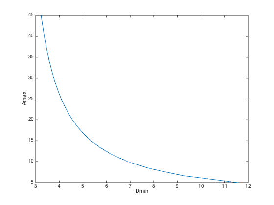

% Boyd, Kim, Patil, and Horowitz, "Digital circuit optimization % via geometric programming" % Written for CVX by Almir Mutapcic 02/08/06 % (a figure is generated) % % This is an example taken directly from the paper: % % Digital circuit optimization via geometrical programming % by Boyd, Kim, Patil, and Horowitz % Operations Research 53(6): 899-932, 2005. % % Solves the problem of choosing device widths w_i for the given % NAND2 gate in order to achive minimum Elmore delay for different % gate transitions, subject to limits on the device widths, % gate area, power, and so on. The problem is a GP: % % minimize D = max( D_1, ..., D_k ) for k transitions % s.t. w_min <= w <= w_max % A <= Amax, etc. % % where variables are widths w. % % This code is specific to the NAND2 gate shown in figure 19 % (page 926) of the paper. All the constraints and the objective % are hard-coded for this particular circuit. %******************************************************************** % problem data and hard-coded GP specs (evaluate all transitions) %******************************************************************** N = 4; % number of devices Cload = 12; % load capacitance Vdd = 1.5; % voltage % device specs NMOS = struct('R',0.4831, 'Cdb',0.6, 'Csb',0.6, 'Cgb',1, 'Cgs',1); PMOS = struct('R',2*0.4831, 'Cdb',0.6, 'Csb',0.6, 'Cgb',1, 'Cgs',1); % maximum area and power specification Amax = 24; wmin = 1; % varying parameters for the tradeoff curve Npoints = 25; Amax = linspace(5,45,Npoints); Dopt = []; disp('Generating the optimal tradeoff curve...') need_sedumi = strncmpi(cvx_solver,'sdpt',4); if need_sedumi, warning('This model does not converge with SDPT3... switching to SeDuMi.'); end for k = 1:Npoints fprintf(1,' Amax = %5.2f:', Amax(k)); cvx_begin gp quiet if need_sedumi, cvx_solver sedumi end % device width variables variable w(N) % device specs device(1:2) = PMOS; device(3:4) = NMOS; for num = 1:N device(num).R = device(num).R/w(num); device(num).Cdb = device(num).Cdb*w(num); device(num).Csb = device(num).Csb*w(num); device(num).Cgb = device(num).Cgb*w(num); device(num).Cgs = device(num).Cgs*w(num); end % capacitances C1 = sum([device(1:3).Cdb]) + Cload; C2 = device(3).Csb + device(4).Cdb; % input capacitances Cin_A = sum([ device([2 3]).Cgb ]) + sum([ device([2 3]).Cgs ]); Cin_B = sum([ device([1 4]).Cgb ]) + sum([ device([1 4]).Cgs ]); % resistances R = [device.R]'; % area definition area = sum(w); % delays and dissipated energies for all six possible transitions % transition 1 is A: 1->1, B: 1->0, Z: 0->1 D1 = R(1)*(C1 + C2); E1 = (C1 + C2)*Vdd^2/2; % transition 2 is A: 1->0, B: 1->1, Z: 0->1 D2 = R(2)*C1; E2 = C1*Vdd^2/2; % transition 3 is A: 1->0, B: 1->0, Z: 0->1 % D3 = C1*R(1)*R(2)/(R(1) + R(2)); % not a posynomial E3 = C1*Vdd^2/2; % transition 4 is A: 1->1, B: 0->1, Z: 1->0 D4 = C1*R(3) + R(4)*(C1 + C2); E4 = (C1 + C2)*Vdd^2/2; % transition 5 is A: 0->1, B: 1->1, Z: 1->0 D5 = C1*(R(3) + R(4)); E5 = (C1 + C2)*Vdd^2/2; % transition 6 is A: 0->1, B: 0->1, Z: 1->0 D6 = C1*R(3) + R(4)*(C1 + C2); E6 = (C1 + C2)*Vdd^2/2; % objective is the worst-case delay minimize( max( [D1 D2 D4] ) ) subject to area <= Amax(k); w >= wmin; cvx_end % display and store computed values fprintf(1,' delay = %3.2f\n',cvx_optval); Dopt = [Dopt cvx_optval]; end % plot the tradeoff curve plot(Dopt,Amax); xlabel('Dmin'); ylabel('Amax'); disp('Optimal tradeoff curve plotted.')
Generating the optimal tradeoff curve... Warning: This model does not converge with SDPT3... switching to SeDuMi. Amax = 5.00: delay = 11.56 Amax = 6.67: delay = 9.23 Amax = 8.33: delay = 7.84 Amax = 10.00: delay = 6.90 Amax = 11.67: delay = 6.23 Amax = 13.33: delay = 5.73 Amax = 15.00: delay = 5.34 Amax = 16.67: delay = 5.03 Amax = 18.33: delay = 4.77 Amax = 20.00: delay = 4.55 Amax = 21.67: delay = 4.37 Amax = 23.33: delay = 4.22 Amax = 25.00: delay = 4.08 Amax = 26.67: delay = 3.96 Amax = 28.33: delay = 3.86 Amax = 30.00: delay = 3.76 Amax = 31.67: delay = 3.68 Amax = 33.33: delay = 3.60 Amax = 35.00: delay = 3.54 Amax = 36.67: delay = 3.47 Amax = 38.33: delay = 3.42 Amax = 40.00: delay = 3.36 Amax = 41.67: delay = 3.32 Amax = 43.33: delay = 3.27 Amax = 45.00: delay = 3.23 Optimal tradeoff curve plotted.
